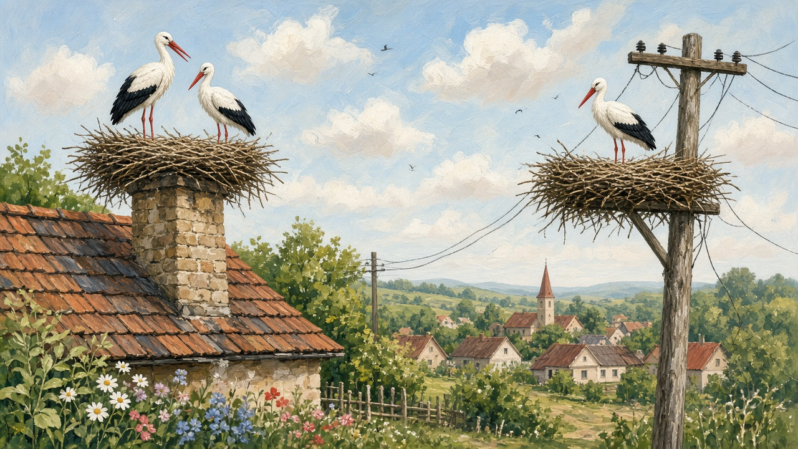
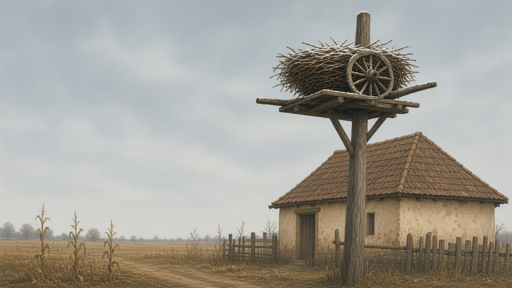

Storks
Barză, and the definite barza. The white bird on a chimney or a pole — not the heron in the reeds. The nest people mean when they talk about the village yard.

The nest on the roof
The cuib sits where the sky is open: a chimney, the horn; an electric pole, a stâlp; the church roof if the tiles will take the weight. From the road it is a dark pile of sticks that looks careless until you watch it hold a storm. People still put a floor under it — an old cartwheel, a roată de car, nailed to a pole or to the gable — so the nest does not slide and the bird does not have to argue with tin. Some poles now carry a purpose-built platform; the cartwheel is the older floor people still name. The house does not own the stork. The stork uses the house. In a sat on the plains you see that silhouette before you see whose gate it is. The lane, the fence, the neighbors who know the nest as well as they know the dog, sit on villages. The yard under it is the one on the house.
When they come, when they go
They come back in spring, often in the same week the village already expects. Someone says the storks are here, and the year has a date that is not on the church wall. The pair fuss the old sticks, add a few, and the clacking starts over the maize — the same field the harvest page later strips. They leave in late summer or early autumn: the young first, then the rest, and the nest sits empty through the snow, a basket of twigs against the sky. In January nobody takes those sticks down as if the house had failed. That turn is a calendar marker the way the first green or the last jar is a marker — it sits with the year, not as a feast or a fast, but as the week people still use when they talk about when the grass was high. You do not need a migration map. You need the habit of looking up in March.
A good sign, said plainly
Villagers still talk about a nest on the house as a good sign. Noroc for the household. A blessing that does not need a priest to name it. The talk is older than the electric pole, and it is not a fairy tale you act out. A pair that returns means the roof is still standing, the village is still a village, and the yard is still worth claiming. When the nest is gone a season, people notice the way they notice a locked gate. The news is over the fence in March, the same tone as a returned neighbor. Nobody has to believe every old sentence about luck. They still look at the chimney in March, and they still tell a neighbor if the birds came back.
The empty nest
The cartwheel stays. Snow sits on the sticks. The pair is gone until March. Winter on the yard is frost and a woodpile; winter on the pole is only that basket against the sky. People still call a nest on the house a good sign, but they do not tell it as a story for children. They look up. They tell a neighbor if the birds came back. If the nest is gone a season, they notice. The year page keeps the seasons. This is only the chimney, the pole, the wheel under the snow, and the week someone still uses when they say the storks are here.
The cartwheel
The sticks need a floor, and the floor is often an old wheel. A roată de car — a cartwheel off a wagon that no longer rolls — or a square of boards made for the job, nailed flat to a pole or under the gable. From the lane you see the ring first: rust, or pale wood, then the dark basket sitting on it. People still put one up so the pile has something to hold when the wind comes off the plain. A newer pole may carry a purpose-built floor with no wheel left in it. Neighbors still point and say cartwheel.
The yard under that nail is the one on the house. The lane that looks up, and the fence the news crosses, sit on villages. The house does not own the bird. It owns the nail, and the bird decides whether the nail was worth the trip.

March on the chimney
The week is ordinary until someone stops in the lane. The pair is on the horn again — the same two, or two that will do — turning the old sticks, dropping one, picking it up. You hear them before you agree they are there: a dry clack, then another, over the stubble. The maize is not a crop yet. It is last year’s field, the one harvest already took and will take again. A neighbor leans on the fence and says they came back. That is the whole news.
Nobody explains the flight. The talk stays in the yard: which chimney, which pole, whether the nest on the next house is still bare. The year keeps the seasons. This is only the week people use when they look up. You do not need a count of the young. You need the habit of asking, over the fence, whether the birds took the old floor again.
Not the birds in the reeds
This is the white stork of the plains and the village roofs. Barza if you are standing in the yard. It is not the heron, the stârc, still as a stake in the Delta, and it is not the pelican on a sandbar. Those birds, the channels, the houses with one foot in the water, sit on wildlife and on the delta. The Danube’s last branching is another water — that map is on rivers. Do not mix them. One lives over the maize and the chimney. The other lives where the Danube opens into reeds. If someone in town says they saw storks, ask whether they mean the cartwheel and the empty nest on a pole in the county they come from — and whether the pair was back in March — or a heron on a weekend in the water.